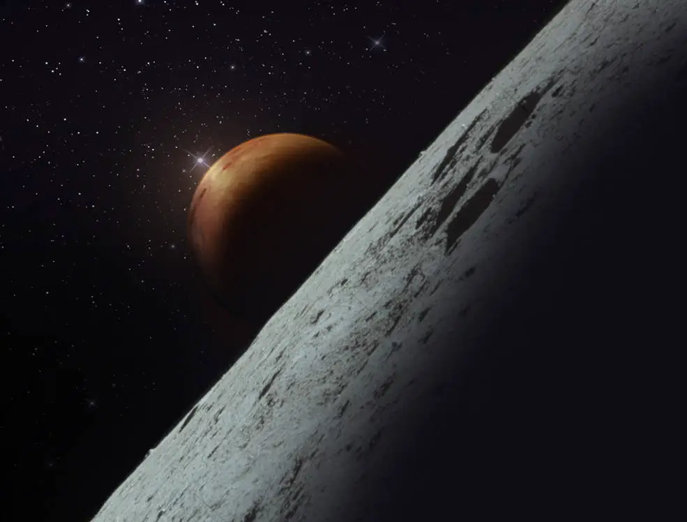

NASA
The National Aeronautics and Space Administration is an independent agency of the U.S. federal government responsible for the civil space program, aeronautics research, and space research.

NASA Official Website
Topics of Research:
- Humans in Space
- Solar System
- Earth
- Universe
Past Missions:
- Apollo
- Apollo-Soyuz
- Gemini
- Mercury
- Skylab
Upcoming Missions
- TROPICS Mission First Launch
- A NASA constellation of four storm tracking CubeSats will study tropical cyclones beginning in the 2023 Atlantic hurricane season. TROPICS will observe the atmosphere to increase our understanding of hurricanes, typhoons, and other intense weather. Two CubeSats will be on the first launch; and two more will launch approximately a month later.
- Axiom Mission-2 Launch
- Axiom Space's Director of Human Spaceflight and former NASA astronaut Peggy Whitson will command the privately funded mission. John Shoffner of Knoxville, Tennessee, will serve as pilot. The two mission specialists, Ali Alqarni and Rayyanah Barnawi from the Kingdom of Saudi Arabia, are members of the inaugural Saudi national astronaut program.
They are flying through an arrangement between KSA and Axiom Space. Once docked, the private astronauts plan to spend 10 days aboard the orbiting laboratory implementing a full mission of science, outreach, and commercial activities.
- EUCLID
- Euclid, a European Space Agency (ESA) mission with contributions from NASA, is designed to explore the composition and evolution of the dark universe. The spacecraft will launch on a SpaceX Falcon 9 rocket from Cape Canaveral.
List of crewed Artemis program missions:
| Mission |
Launch Date |
Launch Vehicle |
Duration |
| Artemis 2 |
November 2024 |
SLS Block 1 Crew |
~10d |
| Artemis 3 |
December 2025 |
SLS Block 1 Crew |
~30d |
| Artemis 4 |
September 2028 |
SLS Block 1B Crew |
~30d |
| Artemis 5 |
September 2029 |
SLS Block 1B Crew |
~30d |